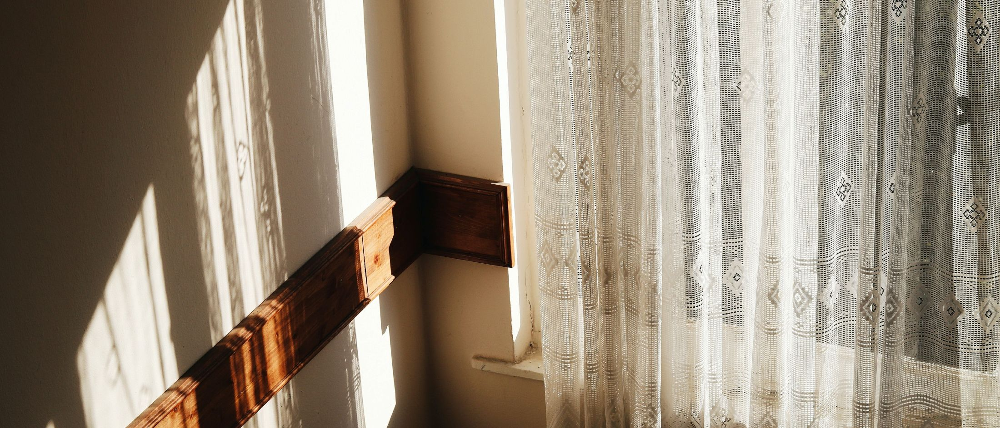
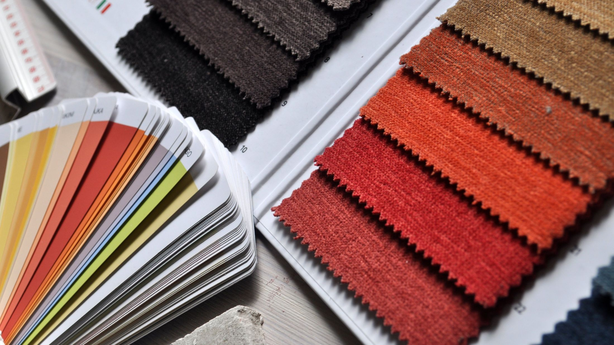
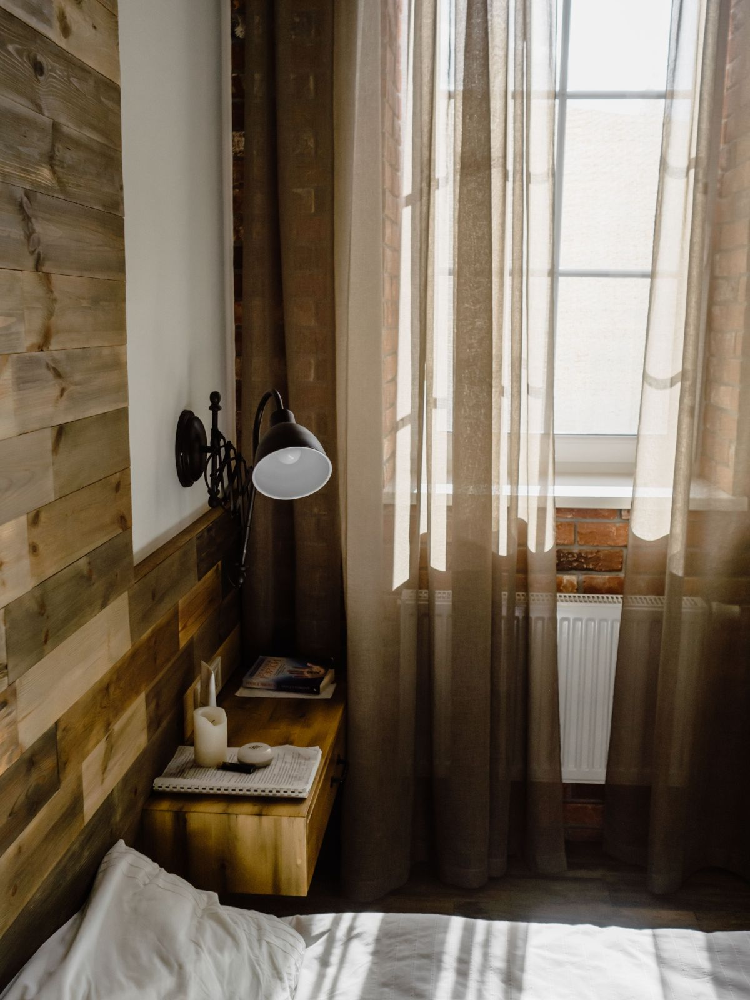
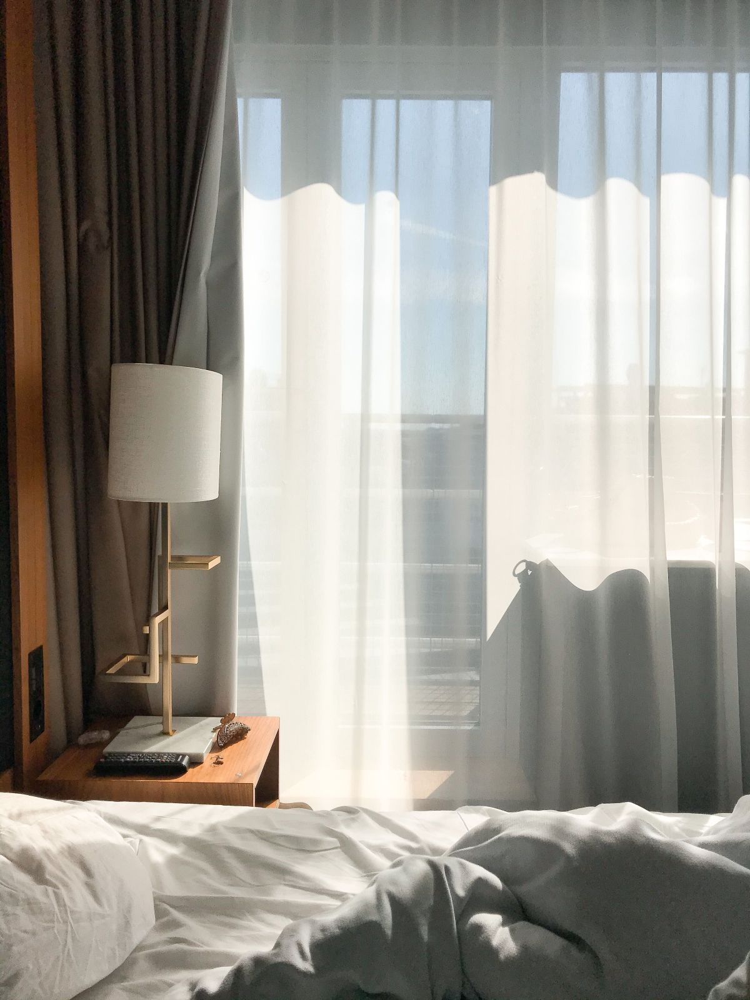
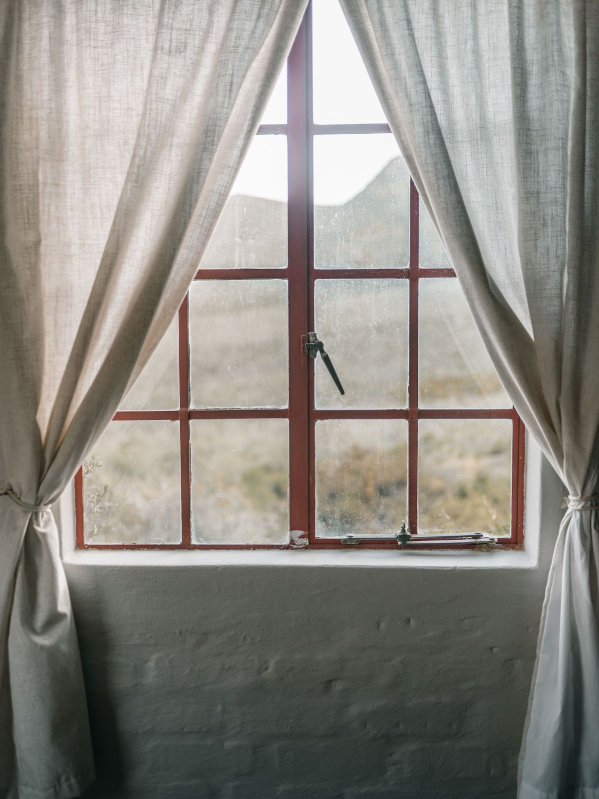
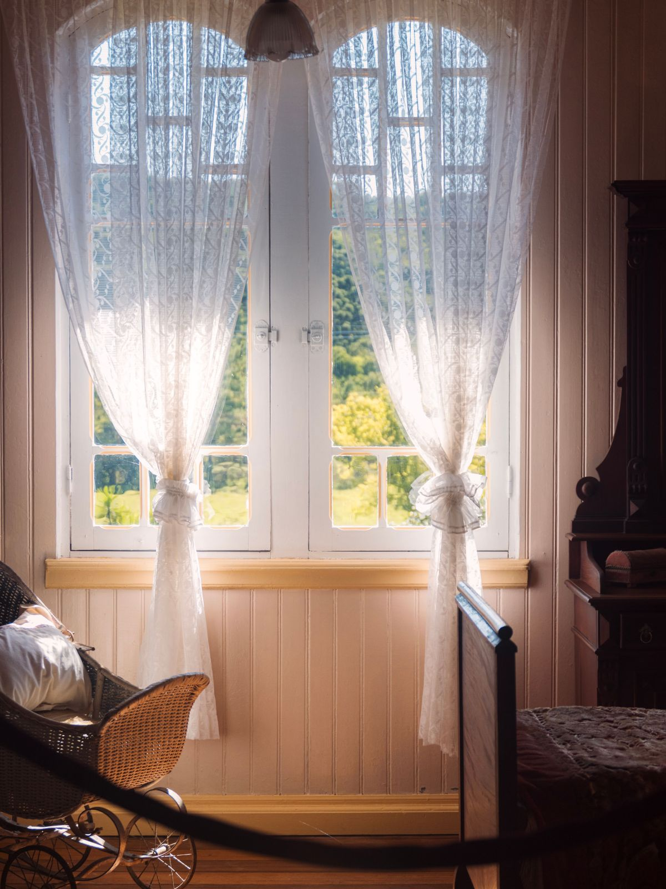
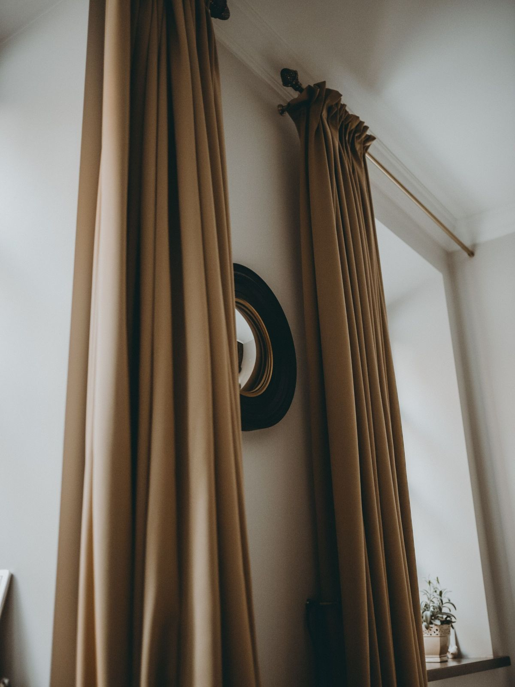
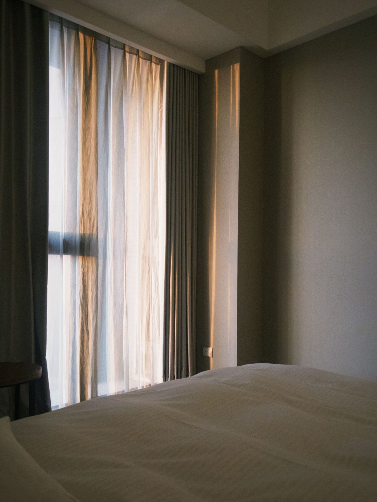
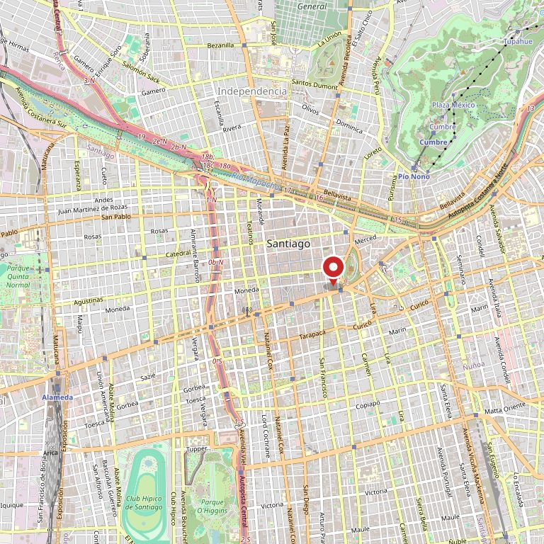

Living
Doble: una gasa que se deja todo el día y una tela con cuerpo para la noche. Es la ventana que más se mira desde la calle.
Santiago Centro · 701 reseñas con 4,7
Una cortina se elige de día y se sufre de noche. Acá la tela se mira dentro de un living —con sol de mañana, con luz de tarde y con la lámpara encendida— antes de encargar nada.
Ver el muestrario en casa Escribir por WhatsApp

701
reseñas en Google, verificadas el 27-08-2026
4,7
de promedio. Con esa cantidad de reseñas, 4,7 es un negocio que cumple
3
horas del día en que la misma tela se ve distinta, y hay que mirarlas todas
0
páginas donde ver una tela antes de ir a la tienda
La pregunta que nadie contesta
En la tienda la luz es una sola. En su casa son tres, y la cortina que se veía perfecta al mediodía puede dejar pasar la ampolleta del vecino a las once de la noche. Elija la hora y mire el living: cambia la luz que entra, la sombra en el piso y cuánto cierra la tela.
Dibujo nuestro para explicar el efecto. No es una foto de la tienda ni de una cortina suya.
Los nombres y los usos van marcados como ejemplo a propósito: son del oficio, no del catálogo de la tienda. No hay precios, porque publicar un valor que no nos dieron sería inventarlo.
Pieza por pieza
Doble: una gasa que se deja todo el día y una tela con cuerpo para la noche. Es la ventana que más se mira desde la calle.
Blackout, y que pase la pared —no sólo el vano— para que no entre luz por los lados.
Corta, sobre el mesón, y de una tela que aguante lavarse. La grasa y el vapor mandan acá.
Sunscreen: baja el reflejo en la pantalla sin dejar el cuarto a oscuras a las tres de la tarde.
Lo que se vende es el muestrario
La tela se elige con las manos: el peso, la caída y cuánta luz deja pasar cuando uno la levanta contra la ventana. Eso no se reemplaza con una página. Lo que sí hace una página es llevar a la persona a la tienda sabiendo qué viene a buscar, y con la mitad de las preguntas ya contestadas.
Los cuatro datos de arriba están marcados como ejemplo a propósito. Son los que la tienda confirma en una conversación de dos minutos, y son justo los que hoy no están en ninguna parte.

«Setecientas una personas entraron, eligieron y volvieron a contarlo.
Ninguna pudo mostrarle la tela a alguien mandando un link.»
De la tela a la ventana
No decimos plazos ni valores: no nos los dieron. Los pasos son el orden del oficio.






Estas fotos son de bancos de uso libre y no son de Cortinas Deco Hogar. Están para que se vea de qué habla la página. Las de verdad las tiene la tienda y son mejores: cada cortina que instalan es una foto.
Escribir
Con eso parte la conversación. El número es el que aparece en su ficha de Google y es celular, así que recibe WhatsApp.

Para el dueño
Una propuesta de sitio web hecha por nuestra cuenta. Cortinas Deco Hogar Chile no la encargó ni la ha revisado. Dimos por cierto sólo lo que ya es público: las 701 reseñas con 4,7 de su ficha de Google y el celular.
La dirección exacta, el horario, el catálogo de telas y para qué sirve cada una en su caso. Todo va marcado con línea punteada. No hay precios a propósito: publicar un valor que no nos dieron sería inventarlo.
Fotos de sus telas y de cortinas instaladas por ustedes. Las del banco muestran el rubro; las suyas muestran su trabajo, y en este rubro esa diferencia es toda la venta.